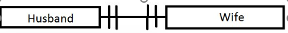
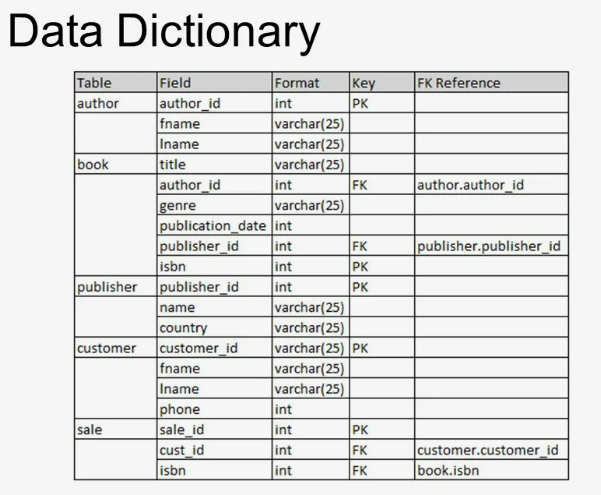

11.4.1.1 describe relational databases and their purpose
A relational database organizes data into structured tables with columns and rows. Each table represents an entity, and the relationships between tables allow for efficient data storage, management, and retrieval. Relational databases help maintain data integrity and prevent redundancy.
11.4.1.2 use the terms attribute, object, index, record, table and tuple to describe databases
Attribute: A characteristic or property of an entity, represented as a column in a table.
Object: The subject or entity described by the data (e.g., a "Customer" table represents customer data).
Index: A data structure that improves search speed and retrieval efficiency.
Record: A single, unique row within a table representing one instance of an entity.
Table: A collection of records related to a specific entity, with columns and rows.
Tuple: Another term for a row or record in a table.
11.4.1.3 explain the difference between primary composite and foreign key
Primary Key: A unique identifier for each record in a table. Composite Key: A key made up of two or more attributes that uniquely identify a record. Foreign Key: An attribute in one table that references the primary key of another table, establishing a link between the two tables.
11.4.1.4 define data types when creating a database
Data types specify what kind of data can be stored in a column, such as integer, text, date, or boolean, ensuring the data is consistent and appropriately formatted.
Data Type
Description
Examples
Integer
Stores whole numbers without decimals.
1, -20, 150
Float/Double
Stores numbers with decimals, allowing for fractional values.
3.14, -45.67, 100.0
Text/String
Holds text or alphanumeric characters.
"John Doe", "Hello123"
Date/Time
Stores date and/or time values.
2023-12-01, 14:30:00
Boolean
Represents binary values, usually true/false or yes/no.
TRUE, FALSE
Binary
Used to store binary data like images, files, etc.
Binary file contents
11.4.1.7 bring connections to the third normal form (3NF)
Third Normal Form (3NF) is a database normalization rule that aims to eliminate data redundancy and dependency issues. A table is in 3NF if:
It is in Second Normal Form (2NF).
It has no transitive dependencies, meaning non-key attributes are not dependent on other non-key attributes.
Benefits of 3NF include improved data integrity, reduced duplication, and optimized storage. This normalization process organizes data more efficiently by breaking down larger tables into smaller, more focused tables connected by keys.
11.4.1.5 define the connections between tables in database
In a relational database, connections between tables allow data to be linked and accessed efficiently. Common relationships include:
One-to-One: Each record in Table A relates to exactly one record in Table B, and vice versa.
One-to-Many: A single record in Table A can relate to multiple records in Table B.
Many-to-Many: Records in Table A can relate to multiple records in Table B and vice versa, typically implemented using a junction table.
Foreign keys are used to establish these relationships, linking the primary key of one table to a corresponding column in another table, which maintains referential integrity and allows related data to be efficiently retrieved and manipulated.
11.4.1.6 create an entity-relationship (ER) model
An Entity-Relationship (ER) Model visually represents database structure and the relationships between entities (tables). ER models consist of symbols to depict entities, attributes, and relationships.
ER Model Symbol
Description
Image
Entity
Represents an object or concept, often a table that stores specific data, like "Customer" or "Order".
Attribute
A property or characteristic of an entity, represented as a column within a table.
Relationship
A connection between two entities, indicating how data in one table relates to data in another.
ER Models help database designers plan the structure of the database, ensuring efficient data storage and retrieval.
11.4.2.1 explain the purpose of data dictionary
A data dictionary is a centralized repository that stores metadata about database elements, providing detailed information about each attribute and table in a database. It includes descriptions of:
Table Names: Names of tables within the database.
Column Names: Attributes or fields in each table.
Data Types: The type of data stored in each attribute (e.g., integer, text).
Constraints: Any rules applied to the data (e.g., NOT NULL, UNIQUE).
Relationships: Connections between tables, defined by foreign keys and other links.
Data dictionaries are essential for database management as they provide a reference for developers and administrators, helping ensure data integrity, consistency, and clarity. They also facilitate communication across teams by offering a single source of truth for database structure and standards.

11.4.2.2 compare the data definition language (DDL), and the data manipulation language (DML)
Feature
Data Definition Language (DDL)
Data Manipulation Language (DML)
Purpose
Defines and manages the database structure (e.g., creating, altering, or deleting tables).
Handles data within the structure (e.g., inserting, updating, and retrieving records).
Commands
CREATE, ALTER, DROP
SELECT, INSERT, UPDATE, DELETE
Impact
Modifies the schema or structure of the database.
Affects the data within the database without changing the schema.
11.4.2.3 describe the basic SQL queries for working with tables in a database: CREATE, ALTER and DROP
The following SQL queries are used to manage database tables, typically under DDL:
CREATE: Used to create new tables or databases, defining the structure and columns.
CREATE TABLE Students (ID INT, Name VARCHAR(50), Age INT);
ALTER: Modifies an existing table by adding, modifying, or deleting columns.
ALTER TABLE Students ADD COLUMN Grade CHAR(1);
DROP: Deletes tables or databases, including all their data and structure.
DROP TABLE Students;
11.4.2.4 describe the basic SQL queries for working with one table in a database: SELECT, UPDATE, INSERT and DELETE
These SQL commands are part of DML and are essential for working with data within a single table:
SELECT: Retrieves data from one or more columns within a table.
SELECT Name, Age FROM Students WHERE Age > 18;
INSERT: Adds new records to a table.
INSERT INTO Students (ID, Name, Age) VALUES (1, 'Alice', 20);
UPDATE: Modifies existing records in a table.
UPDATE Students SET Age = 21 WHERE Name = 'Alice';
DELETE: Removes records from a table based on a condition.
DELETE FROM Students WHERE Age = 18;
11.4.2.5 use SQL SELECT for data selection in more tables
When data needs to be retrieved from multiple tables, SQL JOIN operations are used. Common joins include:
INNER JOIN: Retrieves only matching records between tables.
SELECT Students.Name, Grades.Score
FROM Students
INNER JOIN Grades ON Students.ID = Grades.StudentID;
LEFT JOIN: Retrieves all records from the left table and matching records from the right table, with NULLs if no match is found.
SELECT Students.Name, Grades.Score
FROM Students
LEFT JOIN Grades ON Students.ID = Grades.StudentID;
RIGHT JOIN: Retrieves all records from the right table and matching records from the left table.
SELECT Students.Name, Grades.Score
FROM Students
RIGHT JOIN Grades ON Students.ID = Grades.StudentID;
FULL JOIN: Retrieves all records when there is a match in either table.
SELECT Students.Name, Grades.Score
FROM Students
FULL JOIN Grades ON Students.ID = Grades.StudentID;
Using SQL SELECT statements with joins allows for powerful data retrieval across multiple tables, facilitating complex queries and reporting.
Data Flow Diagrams (DFD) Symbols shows how data moves around a system. It shows how data is captured, processed, stored and distributed within a system. A data flow diagram is a logical model of a system.
A data flow diagram uses four basic symbols to form a picture of a logical system.
Symbol
Description
Image
Process
Represents a process that transforms data inputs into outputs
Data Store
Represents where data is stored within the system
Data Flow
Indicates the direction of data movement in the system
External Entity
Represents external sources or destinations of data
Example task
A supermarket’s Point Of Sale (POS) system operates as follows:
• Product data (ProductID, Price, Product Description) are stored in the database, Product Database.
• A barcode is present on each shopping basket item.
• A shop assistant scans each shopping basket item with a barcode scanner.
• A process, Calculate Bill, generates a Bill which is presented to the customer.
• The bill is itemised with Product Description, Price for each item sold.
Answer
11.2.1.7 use flow charts to input, process, store and output data in computing systems
A flowchart is a type of diagram that represents a workflow or process. A flowchart can also be defined as a diagrammatic representation of an algorithm, a step-by-step approach to solving a task.
Symbol
Description
Image
Start/End
Marks the beginning or end of a flowchart process
Process
Represents a task or action in the process flow
Decision
Indicates a point where a decision is required
Input/Output
Represents an input or output in the flow of the process
Example
11.2.2.4 discuss the advantages and disadvantages of using prototypes when developing solutions
Prototyping involves creating an early model or sample of a system to evaluate its features, usability, and functionality. Here are some key advantages and disadvantages:
Advantages of Prototyping
Improved User Feedback: Allows users to interact with a model of the system early on, leading to valuable feedback that can guide development.
Enhanced Communication: Visual prototypes provide a clear understanding between developers and stakeholders, reducing misunderstandings.
Early Error Detection: Identifying usability issues or design flaws in the prototype phase helps avoid costly changes later.
Flexibility in Design: Allows developers to make adjustments based on iterative feedback, enhancing the final product’s functionality and user satisfaction.
Disadvantages of Prototyping
Scope Creep: As users request new features, the scope may expand beyond the initial project plan, potentially causing delays.
Misinterpretation of Prototype: Users may mistakenly view the prototype as the final product, creating unrealistic expectations for project completion.
High Cost and Time Investment: Creating a detailed prototype can require additional time and resources, especially if numerous iterations are needed.
Potential Inefficiency: Developers may focus on refining the prototype rather than concentrating on the complete system, which can delay actual development.
11.2.2.5 discuss the use of prototypes based on a specific example 11.2.2.6 develop a prototype for a new system
Consider a company developing a new mobile banking application. Here’s how prototypes help in this context:
Initial Wireframe: A simple wireframe of the application screens is created to showcase the navigation and layout.
Feedback Gathering: Users interact with the wireframe, offering feedback on elements like ease of navigation and screen transitions.
Interactive Prototype: An interactive version of the prototype is created with functional buttons and mock data, allowing users to experience a closer version of the final app.
Refinement: Based on feedback, developers modify layouts, colors, and features, gradually bringing the app closer to the end product that meets user needs.
11.2.2.1 analyze the advantages of new system
An exam question might ask: "A school introduces a new online grading system for students and teachers. Describe the advantages of this new system."
Advantages of the New System:
Increased Accessibility: Teachers and students can access the system from anywhere, improving communication and accessibility to grades.
Enhanced Efficiency: Automated calculations and grade inputs save teachers’ time and reduce errors associated with manual entry.
Data Security: Digital records reduce the chance of physical records being lost or damaged, enhancing data security and integrity.
Real-time Feedback: Students receive real-time updates on their grades, which encourages continuous improvement and engagement.
11.2.2.2 analyze the restrictions of new system
Consider a similar task: "A hospital introduces a new patient management system. Analyze the restrictions this new system may face."
Restrictions of the New System:
Initial Cost: Implementing a system can be expensive, including the software purchase, hardware upgrades, and staff training.
Learning Curve: Staff need time to adapt to new technology, which can temporarily slow operations.
Technical Limitations: If hardware doesn’t meet the system requirements, performance may suffer, leading to delays or data processing issues.
Data Privacy Concerns: Systems handling sensitive information need strict security measures, which can be challenging to implement fully.
11.2.2.3 describe the characteristics of a development framework
A development framework provides the structure and tools necessary for developing software. GCSE tasks might ask, "Explain the role of a development framework in software projects."
Key Characteristics of Development Frameworks:
Development frameworks include libraries, tools, and best practices that simplify and standardize coding.
Modularity: Frameworks support modular design, where code is organized in reusable components, aiding collaboration and consistency.
Code Libraries: Provide ready-to-use code modules, speeding up development for common features (e.g., login systems).
Integrated Development Environment (IDE) Support: Often integrated with popular IDEs, frameworks improve developer productivity through tools for debugging, testing, and code completion.
Examples of Development Frameworks:
React (JavaScript): Used for building user interfaces, especially single-page applications (SPAs).
Spring (Java): Commonly used for enterprise-level backend applications.
Django (Python): Popular for web applications due to its simplicity and quick development cycle.
11.2.2.7 define minimum requirements for hardware when implementing
Minimum Hardware Requirements:
When implementing a new system, it’s essential to ensure the hardware meets the minimum requirements to support the software efficiently. Typical hardware considerations include:
Processor: A multi-core processor is recommended for handling complex tasks smoothly.
Memory (RAM): Adequate memory is essential to support multitasking and resource-demanding applications; generally, 8GB or more is suggested.
Storage: Solid State Drives (SSD) provide faster access to data compared to traditional HDDs, and at least 256GB is commonly required for system responsiveness.
Graphics Card: For systems handling graphic-intensive tasks, a dedicated graphics card is necessary to ensure high-quality visual output and processing power.
11.3.1.5 justify their choice of applied software and choice criteria based on the goals
Example question: "Your school needs software to create presentations and manage documents. Justify your choice of software based on the goals."
Criteria for Choosing Applied Software:
Compatibility: The software should work seamlessly with existing systems and file formats (e.g., Microsoft Office for document and presentation needs).
User-Friendliness: Software should be easy for all users to operate without extensive training (e.g., Google Docs for collaborative editing).
Cost-Efficiency: Budget considerations are essential; schools may opt for open-source or cost-effective solutions (e.g., LibreOffice as a free alternative).
Security and Privacy: The software must protect sensitive data, especially in educational environments (e.g., cloud-based software with data encryption).
In this example, schools may choose Microsoft Office for its widespread use, compatibility, and rich features, justifying it as a reliable option for both educators and students.